Nguyen Van Tuan AnhNguyễn Văn Tuấn AnhНгуен Ван Туан Ань
Right nowHiện tại tôi đang…Сейчас
StudyingĐang họcУчусь
Master's in Commerce at Plekhanov University, in Russian, and improving my Russian every day.Thạc sĩ Kinh doanh thương mại tại Đại học Plekhanov, học bằng tiếng Nga, và rèn tiếng Nga mỗi ngày.Магистратура «Торговое дело» в РЭУ им. Плеханова на русском языке; каждый день совершенствую русский.
WritingĐang viếtПишу
Notes in Vietnamese on selling on Russian marketplaces. After Ozon, I am now reading up on Wildberries.Ghi chép bằng tiếng Việt về bán hàng trên các sàn Nga. Xong phần Ozon, giờ tôi đang tìm hiểu Wildberries.Записи на вьетнамском о продажах на российских маркетплейсах. После Ozon сейчас изучаю Wildberries.
Looking forĐang tìmИщу
Chances to learn and work in e-commerce in Moscow, and to meet people working in Vietnam–Russia trade.Cơ hội học hỏi và làm việc trong lĩnh vực thương mại điện tử tại Moskva, làm quen với những người làm thương mại Việt – Nga.Возможность учиться и работать в электронной коммерции в Москве, знакомства с людьми из вьетнамско-российской торговли.
AboutGiới thiệuОбо мне
I am a Vietnamese master's student at Plekhanov Russian University of Economics in Moscow, studying Commerce on a Russian Government Scholarship in a full-time, Russian-taught programme.
Before moving to Russia I spent about two years working with sellers at Foody/ShopeeFood and Tiki in Vietnam, helping partners join the platforms and supporting larger sellers. For around six years I also ran a few small businesses of my own: two restaurants, a shoe store and some online shops.
Now, alongside my studies, I am learning how e-commerce works in Russia. Under the name Daniel Nguyen I write down what I learn in Vietnamese and share it, hoping it can be of some use to others who want to sell on Ozon.
Tôi là học viên thạc sĩ người Việt tại Đại học Kinh tế Plekhanov (Moskva), theo học ngành Kinh doanh thương mại bằng học bổng Chính phủ Nga, hệ chính quy, giảng dạy bằng tiếng Nga.
Trước khi sang Nga, tôi có khoảng 2 năm làm việc cùng nhà bán hàng tại Foody/ShopeeFood và Tiki, hỗ trợ đối tác lên sàn và đồng hành cùng các nhà bán hàng lớn. Tôi cũng có khoảng 6 năm tự kinh doanh nhỏ: hai quán ăn, một cửa hàng giày và vài shop online.
Hiện tại, song song với việc học, tôi tìm hiểu thương mại điện tử ở Nga. Với bút danh Daniel Nguyễn, tôi ghi chép lại những gì mình học được bằng tiếng Việt và chia sẻ, mong giúp ích phần nào cho những ai muốn bán hàng trên Ozon.
Я магистрант из Вьетнама в РЭУ им. Г. В. Плеханова (Москва). Обучаюсь по направлению «Торговое дело» по квоте Правительства Российской Федерации, на очной форме, на русском языке.
До переезда в Россию я около двух лет работал с продавцами в Foody/ShopeeFood и Tiki во Вьетнаме: помогал партнёрам подключаться к площадкам и сопровождал крупных продавцов. Около шести лет у меня также был свой небольшой бизнес: два кафе, магазин обуви и несколько интернет-магазинов.
Сейчас, параллельно с учёбой, я изучаю электронную коммерцию в России. Под именем Даниэль Нгуен записываю на вьетнамском то, что узнаю, и делюсь этим в надежде, что это пригодится тем, кто хочет продавать на Ozon.
My journeyHành trìnhМой путь
- 2018 First marketplace jobCông việc đầu tiên trên sànПервая работа на платформе Foody (ShopeeFood): partner development, then team leadFoody (ShopeeFood): phát triển đối tác, rồi trưởng nhómFoody (ShopeeFood): развитие партнёров, затем руководитель группы
- 2019 Own businessesTự kinh doanhСобственный бизнес Two restaurants, a shoe store and Shopee shopsHai quán ăn, cửa hàng giày và shop trên ShopeeДва кафе, магазин обуви и магазины на Shopee
- 2021 Tiki & universityTiki và đại họcTiki и университет Managing top sellers while starting a BBAQuản lý top seller, đồng thời học cử nhân QTKDРабота с топ-продавцами и учёба в бакалавриате
- 2025 Graduation & move to RussiaTốt nghiệp và sang NgaДиплом и переезд в Россию BBA with distinction, then a Russian preparatory yearCử nhân loại Giỏi, rồi năm dự bị tiếng NgaБакалавр с отличием, затем подготовительный год
- 2026 Master's & Daniel NguyenThạc sĩ và Daniel NguyễnМагистратура и Даниэль Нгуен Plekhanov on a scholarship; shared my first notesHọc bổng Plekhanov; chia sẻ những ghi chép đầu tiênПлехановский по квоте; первые записи
ExperienceKinh nghiệm làm việcОпыт работы
How these years fit together: from 2019 to 2025 my own small businesses were my main work. During that time I also worked at Tiki twice (a short role in 2019, then 06/2021 – 03/2022) and studied for my bachelor's degree alongside. Cách các mốc thời gian khớp với nhau: từ 2019 đến 2025, công việc chính của tôi là tự kinh doanh. Trong thời gian đó, tôi làm ở Tiki hai lần (một vị trí ngắn năm 2019, rồi 06/2021 – 03/2022) và học cử nhân song song. Как связаны эти годы: с 2019 по 2025 год основным занятием был мой собственный небольшой бизнес. В это же время я дважды работал в Tiki (короткая должность в 2019 году, затем 06/2021 – 03/2022) и параллельно учился в бакалавриате.
Personal projectDự án cá nhânЛичный проект
- Put my notes on selling on Ozon together into a free guide in Vietnamese, with a few simple spreadsheets for profit, advertising and inventory.
- Trying out small written consultations for people who are just starting on Ozon.
- Tổng hợp những gì mình tìm hiểu về Ozon thành một cuốn cẩm nang tiếng Việt tặng miễn phí, kèm vài bảng tính đơn giản về lãi lỗ, quảng cáo và tồn kho.
- Đang thử hỗ trợ tư vấn nhỏ bằng văn bản cho người mới bắt đầu bán trên Ozon.
- Собрал свои записи о продажах на Ozon в бесплатное руководство на вьетнамском языке с несколькими простыми таблицами для расчёта прибыли, рекламы и остатков.
- Пробую давать небольшие письменные консультации тем, кто только начинает на Ozon.
Owner & OperatorChủ doanh nghiệp, người vận hànhВладелец и управляющий
- Ran two small restaurants: T@Food, with a team of four, where I grew sales through online marketing and nearby areas before selling it ahead of my move to Russia; and Elite Fastfood, a spring roll and bún mắm nêm shop that also served delivery apps.
- Built operating procedures, trained staff to a consistent standard and adapted the menu to local tastes.
- Co-founded a shoe store with a former Tiki colleague and ran several shops on Shopee.
- Vận hành hai quán ăn nhỏ: T@Food với 4 nhân sự, tăng doanh số nhờ marketing online và mở rộng khu vực lân cận, sang lại trước khi sang Nga; và Elite Fastfood, quán gỏi cuốn, bún mắm nêm có bán qua các ứng dụng giao đồ ăn.
- Xây dựng quy trình vận hành, đào tạo nhân viên theo tiêu chuẩn và điều chỉnh thực đơn theo thị hiếu địa phương.
- Mở cửa hàng giày cùng đồng nghiệp cũ ở Tiki và vận hành một số shop trên Shopee.
- Вёл два небольших кафе: T@Food с командой из четырёх человек, где наращивал выручку через онлайн-маркетинг и соседние районы, и продал его перед переездом в Россию; и Elite Fastfood — спринг-роллы и бун мам нем, в том числе через приложения доставки.
- Выстроил операционные процессы, обучал персонал единым стандартам, адаптировал меню под местный спрос.
- Вместе с бывшим коллегой из Tiki открыл магазин обуви; вёл несколько магазинов на Shopee.
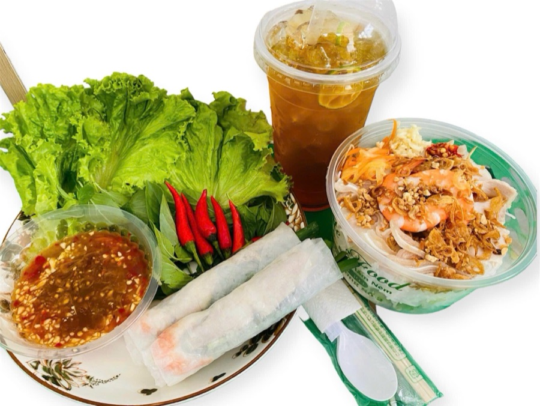
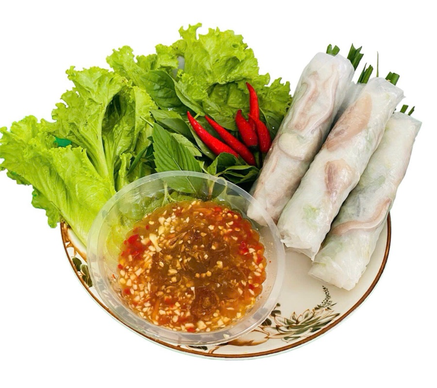
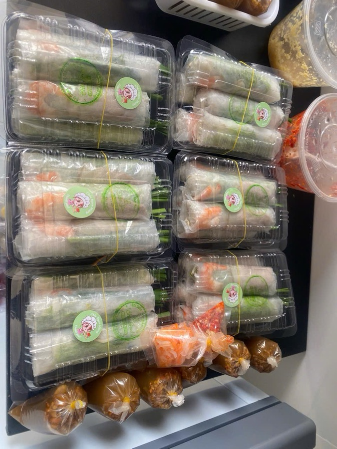
Elite Fastfood: a combo, fresh spring rolls and orders packed for delivery appsElite Fastfood: combo bún mắm nêm, gỏi cuốn và các đơn đóng gói giao qua ứng dụngElite Fastfood: комбо, свежие спринг-роллы и заказы, упакованные для доставки
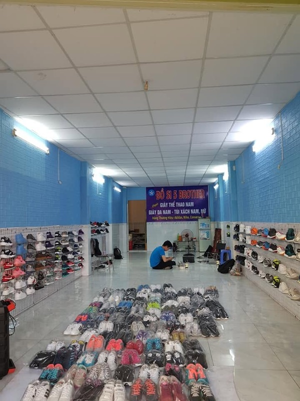
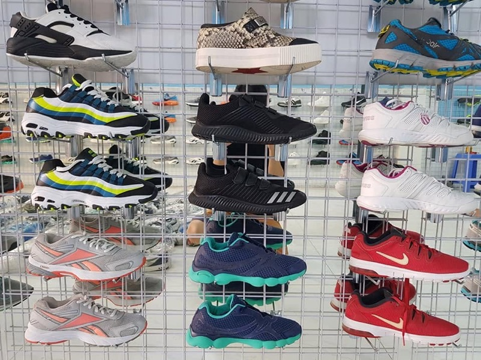
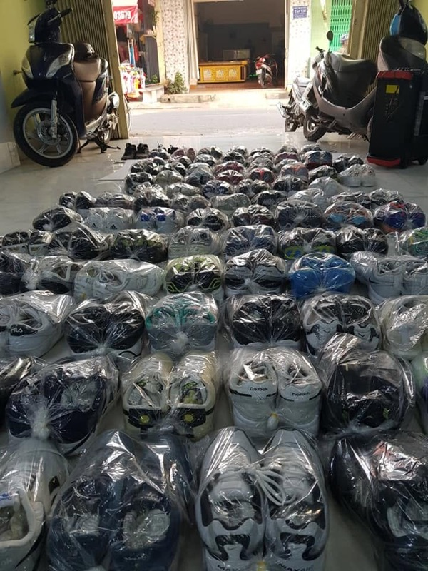
The shoe store I ran with a former Tiki colleagueCửa hàng giày tôi mở cùng đồng nghiệp cũ ở TikiМагазин обуви, который я открыл с бывшим коллегой из Tiki
Seller Business ManagerChuyên viên quản lý kinh doanh nhà bánМенеджер по работе с продавцами
- Managed a portfolio of top sellers, the highest-revenue merchants on the platform, in the electronics category.
- Met monthly KPIs every month; helped speed up store activation and supported sellers throughout the partnership.
- Onboarded and trained new sellers joining the platform.
- Phụ trách nhóm top seller, những nhà bán hàng có doanh số cao nhất trên sàn, ngành hàng điện tử.
- Đạt KPI tất cả các tháng; góp phần rút ngắn thời gian kích hoạt gian hàng, hỗ trợ nhà bán trong suốt quá trình hợp tác.
- Đưa nhà bán hàng mới lên sàn và tổ chức đào tạo.
- Вёл портфель топ-продавцов, лидеров площадки по выручке, в категории электроники.
- Выполнял KPI каждый месяц; помогал ускорить активацию магазинов и сопровождал продавцов на всём этапе сотрудничества.
- Подключал и обучал новых продавцов площадки.
Commercial AssociateNhân viên thương mạiСпециалист коммерческого отдела
Partner Development Executive → Team LeadChuyên viên phát triển đối tác → Trưởng nhómМенеджер по развитию партнёров → руководитель группы
- Signed restaurants and food outlets as partners, onboarded them and helped them run in-app and external marketing campaigns.
- Ranked in the company's monthly Top 10 with awards for three consecutive months.
- Promoted to lead a team of six in my fifth month (two-month probationary period): owned the area's sales targets, recruited and coached the team; the team ranked in the top 5 for two consecutive months.
- Ký hợp đồng và đưa các nhà hàng, quán ăn lên sàn; hỗ trợ đối tác thực hiện các chiến dịch quảng cáo trong và ngoài ứng dụng.
- Lọt top 10 toàn công ty, kèm khen thưởng, 3 tháng liên tiếp.
- Được đề bạt làm trưởng nhóm 6 người từ tháng thứ 5 (2 tháng thử việc): chịu trách nhiệm doanh số khu vực, tuyển dụng và đào tạo nhóm; nhóm nằm trong top 5 hai tháng liên tiếp.
- Заключал договоры с ресторанами и кафе, подключал их к платформе и помогал проводить рекламные кампании в приложении и за его пределами.
- Три месяца подряд входил в ежемесячный топ-10 компании с премиями.
- На пятом месяце назначен руководителем группы из шести человек (испытательный срок два месяца): отвечал за продажи на участке, подбор и обучение команды; группа два месяца подряд входила в топ-5.
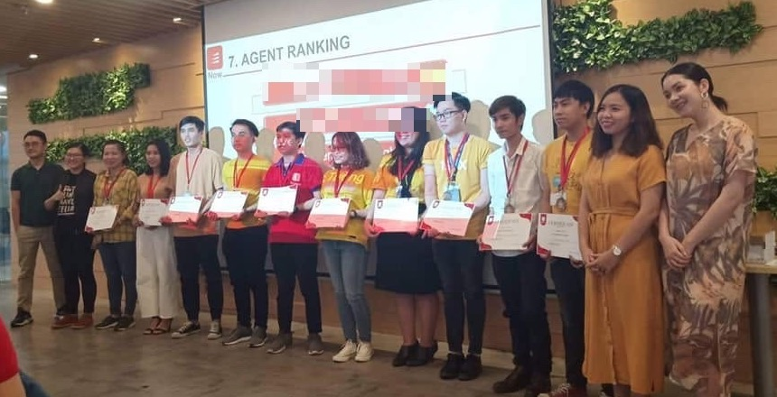
EducationHọc vấnОбразование
Master's in CommerceThạc sĩ Kinh doanh thương mạiМагистратура, «Торговое дело»ScholarshipHọc bổngКвота
- Focus: organisation and technology of trading enterprises.
- Russian Government Scholarship; full-time programme taught in Russian.
- Chuyên sâu: tổ chức và công nghệ của doanh nghiệp thương mại.
- Học bổng Chính phủ Nga; chương trình chính quy bằng tiếng Nga.
- Профиль: организация и технологии торгового предприятия.
- Обучение по квоте Правительства РФ; очная форма, на русском языке.
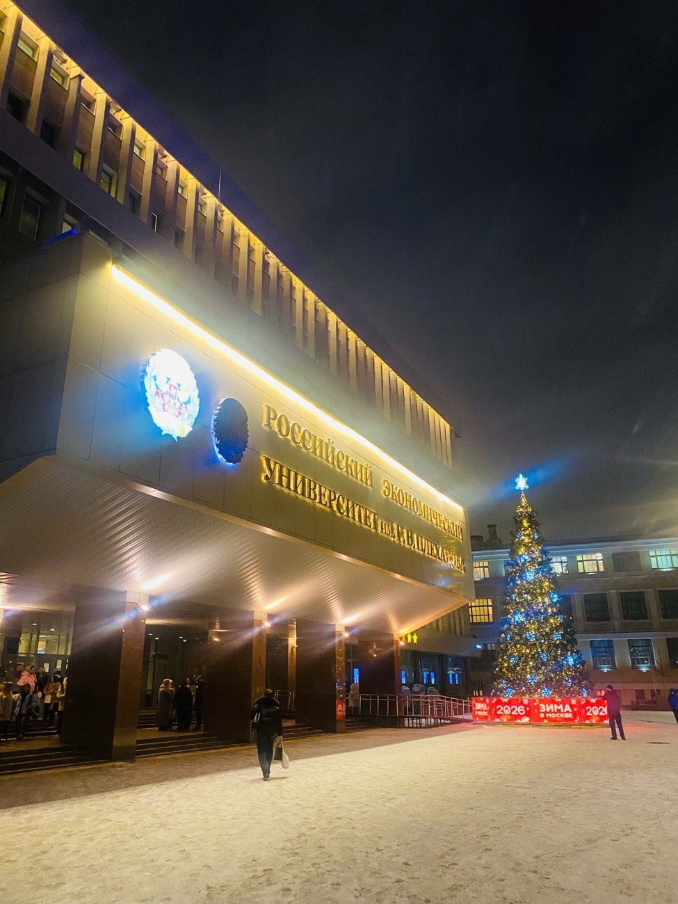
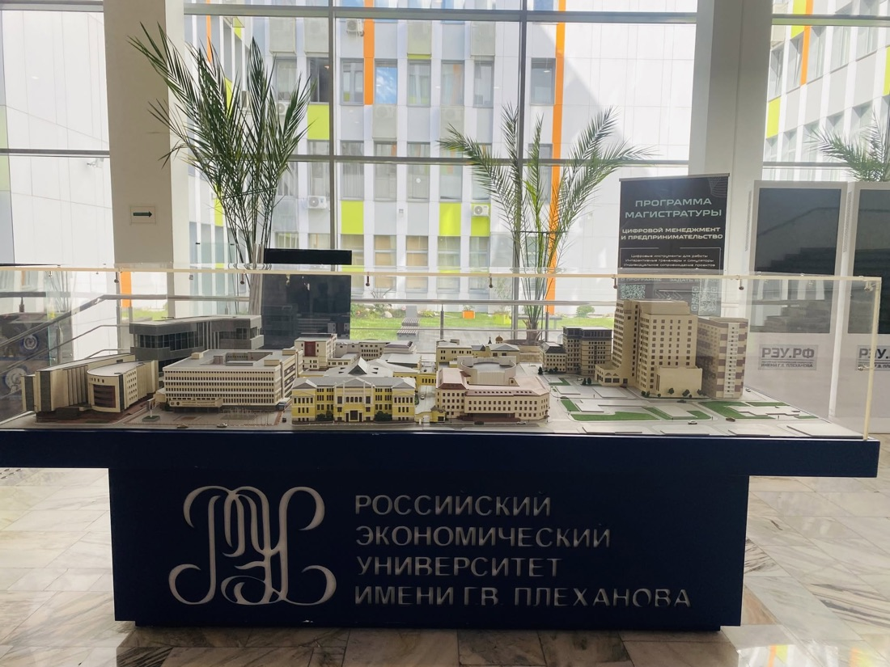
The main building on a winter evening, and the campus model in the lobbyTòa nhà chính của trường vào một tối mùa đông, và mô hình khuôn viên ở sảnhГлавный корпус зимним вечером и макет кампуса в холле
Russian Language Preparatory YearNăm dự bị tiếng NgaПодготовительный факультет (русский язык)
- Pre-university programme for international students, economics track: 1,194 hours.
- Final Russian language exam: 89 points.
- Chương trình dự bị đại học cho sinh viên quốc tế, khối kinh tế: 1.194 giờ học.
- Điểm thi cuối khóa tiếng Nga: 89 điểm.
- Довузовская подготовка иностранных граждан, экономический профиль: 1 194 часа.
- Итоговый экзамен по русскому языку: 89 баллов.
Bachelor of Business AdministrationCử nhân Quản trị kinh doanhБакалавриат, «Менеджмент»DistinctionLoại GiỏiС отличием
- Graduated with distinction, GPA 3.36/4.0.
- Completed while working full time and running my own businesses.
- Tốt nghiệp loại Giỏi, GPA 3.36/4.0.
- Vừa học vừa làm vừa kinh doanh.
- Окончил с отличием, GPA 3,36/4,0.
- Учился параллельно с работой и собственным бизнесом.
Projects & WritingDự án và bài viếtПроекты и публикации

Bán hàng trên Ozon cho người Việt
My notes from learning about Ozon, compiled from Russian-language sources: the rules, fees, advertising and day-to-day operations. Shared for free, with a few simple Excel sheets (profit and loss, advertising and promotions, inventory) and two templates.
Ghi chép của tôi trong quá trình tìm hiểu Ozon, tổng hợp từ tài liệu tiếng Nga: luật chơi, chi phí, quảng cáo và vận hành. Tặng miễn phí, kèm vài bảng tính Excel đơn giản (lãi lỗ, quảng cáo và khuyến mãi, tồn kho) và hai mẫu tài liệu.
Мои записи, которые я собрал из русскоязычных источников, пока изучал Ozon: правила, комиссии, реклама и ежедневная работа. Бесплатно, с несколькими простыми таблицами Excel (прибыль, реклама и акции, остатки) и двумя шаблонами.
What's nextDự định tiếp theoЧто дальше
If time allows, I would like to write similar notes on Wildberries and Avito, share marketplace news on Telegram, and help where I can Vietnamese people in Russia and small businesses in Vietnam who are curious about the Russian market.
Nếu sắp xếp được thời gian, tôi muốn viết thêm ghi chép về Wildberries và Avito, cập nhật tin về các sàn trên Telegram, và hỗ trợ phần nào người Việt ở Nga cũng như các cơ sở kinh doanh nhỏ ở Việt Nam đang tìm hiểu thị trường Nga.
Если позволит время, хочу написать похожие записи о Wildberries и Avito, делиться новостями маркетплейсов в Telegram и по возможности помогать вьетнамцам в России и небольшим компаниям во Вьетнаме, которые интересуются российским рынком.
Events & communitySự kiện và cộng đồngМероприятия и сообщество
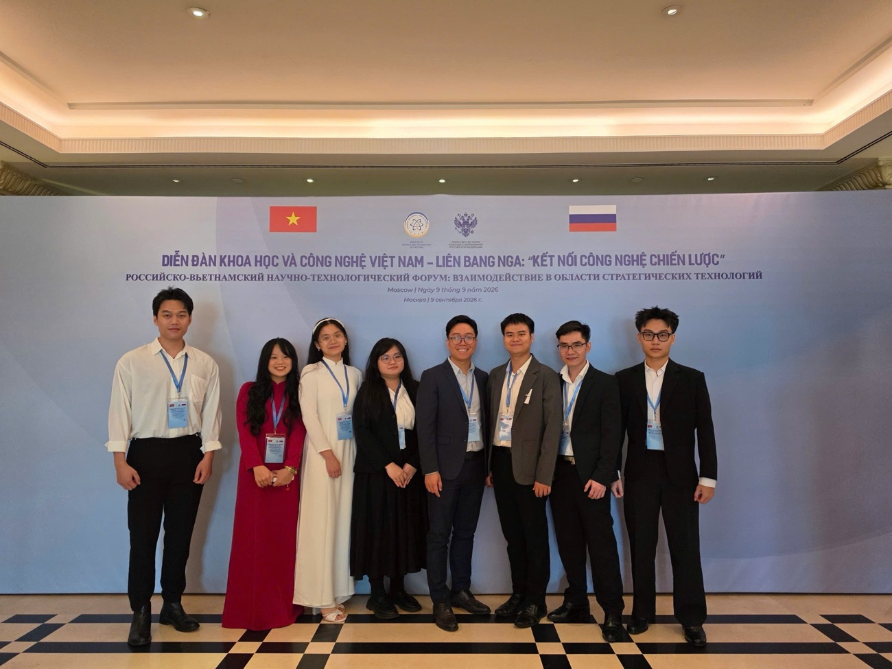
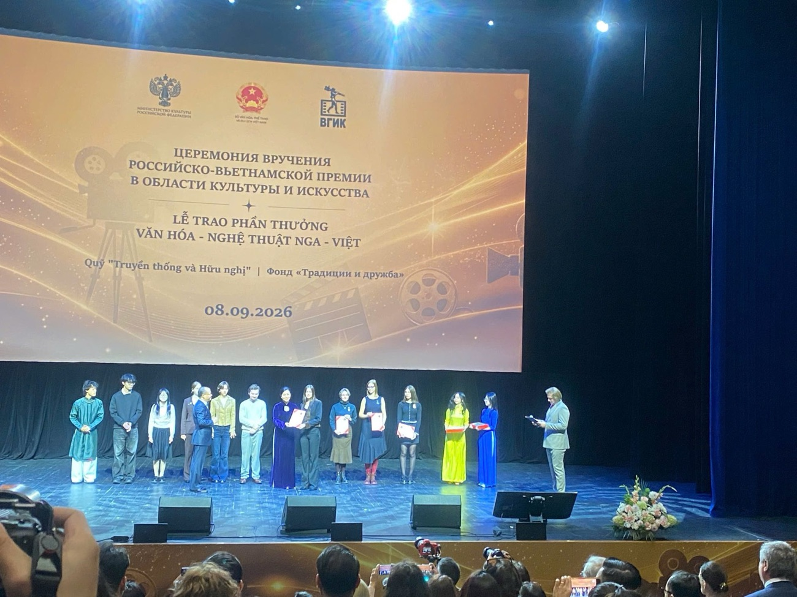
Beyond workNgoài công việcВне работы
SingingCa hátПение
A cover of "Lợi Danh" (Phạm Khánh Hưng). Music is how I unwind after a long day.Cover "Lợi Danh" (Phạm Khánh Hưng). Âm nhạc là cách tôi thư giãn sau một ngày dài.Кавер на песню «Lợi Danh» (Фам Кхань Хынг). Музыка помогает мне отдохнуть после долгого дня.
MC & voice-overMC và đọc lồng tiếngВедущий и озвучка
I have hosted as an MC and recorded news-style voice-overs in the studio. Press play to watch a news-reading clip.Tôi từng làm MC và thu âm đọc bản tin trong phòng thu. Bấm để xem clip dẫn bản tin.Работал ведущим и записывал озвучку в формате новостей в студии. Нажмите, чтобы посмотреть выпуск новостей.
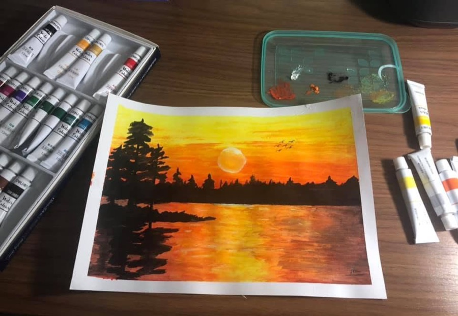
PaintingVẽ tranhРисование
A sunset over the water, painted at home. Drawing teaches me patience and attention to detail.Hoàng hôn trên mặt nước, tôi tự vẽ ở nhà. Vẽ tranh rèn cho tôi sự kiên nhẫn và tỉ mỉ.Закат над водой, нарисованный дома. Рисование учит меня терпению и вниманию к деталям.
Skills & LanguagesKỹ năng và ngôn ngữНавыки и языки
Professional skillsKỹ năng chuyên mônПрофессиональные навыки
LanguagesNgôn ngữЯзыки
Get in touchLiên hệСвязаться со мной
Open to roles in e-commerce and marketplace management in Russia, collaborations on Vietnam–Russia trade, and academic opportunities. Sẵn sàng cho các vị trí về thương mại điện tử và quản lý sàn tại Nga, hợp tác thương mại Việt – Nga và các cơ hội học thuật. Открыт к вакансиям в сфере электронной коммерции и маркетплейсов в России, к сотрудничеству в торговле между Вьетнамом и Россией и к академическим возможностям.